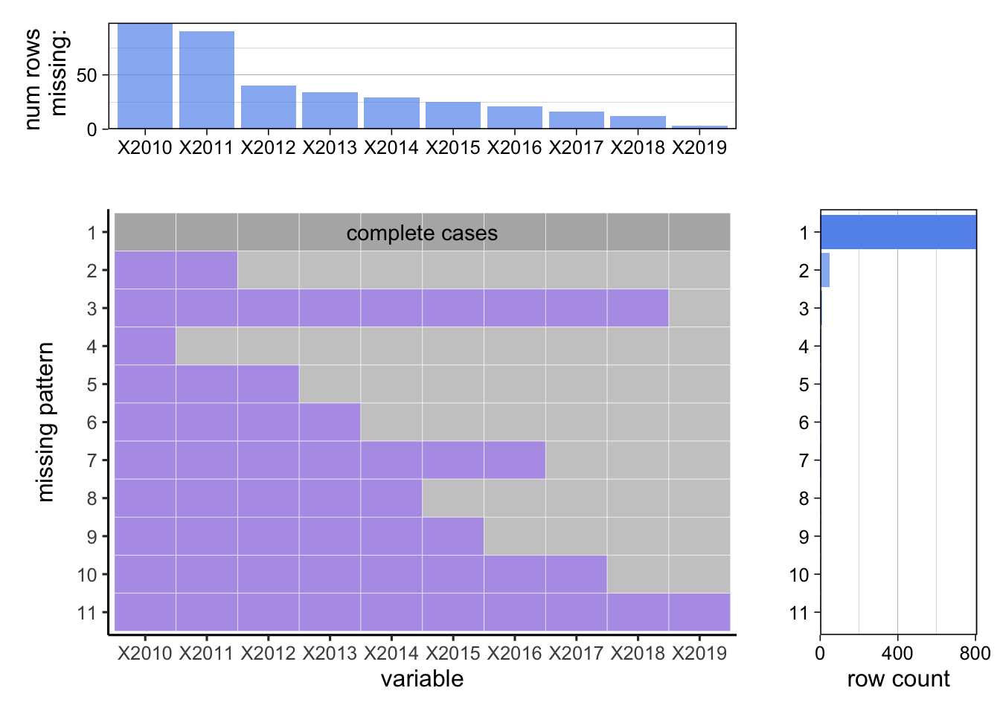

Chapter 4 Missing values

As mentioned in our data source section, the datasets we are using for this investigation comes from Census and Zillow. The Census datasets that we are referencing contains information such as income, population, unemployment, and housing unit. These datssets come from the government organization and are mostly complete. However, on the other hand, the home value data from Zillow, which contains 10 years of price data across 900 distinct cities in US, are missing many data points. By plotting the Zillow Data using the missing value plot, we notice that year 2010 has the maximum number of missing values of ‘homevalue’, and the number of missing values decreases gradually over the years.
To supplement these missing values, we perform an imputation for our missing value Since our data is time series of home value from year 2010 to year 2019, we applied the Time-series Specific method. The time series method of imputation assume the adjacent observations will be similar to the missing data. These assumpetions work well for price over time as each data point would be similar to its temporal neighbors.